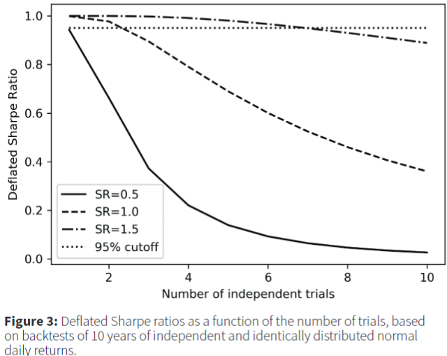

Glossary
Basis Point - 1/100th of a percentage point
Basis Risk - The risk that an asset and a hedge will not move in opposite directions as expected; “basis” refers to the discrepancy.
Beta - A measure of a stock’s or a portfolio’s sensitivity to market movements. It quantifies the relationship between the price movements of a security and the overall market. A beta of 1 indicates that the security tends to move in line with the market, while a beta greater than 1 implies that the security is more volatile than the market. A beta less than 1 suggests that the security is less volatile than the market. Often used as a tool to assess the risk or volatility of a particular stock or portfolio in comparison to the overall market
Capital expenditure (CapEx) - Money that is spent to acquire, repair, update, or improve a fixed company asset, such as a building, business, or equipment. For assets to fall under the CapEx destination, the investments must have a useful life of one year or more. A CapEx is amortized, or its value is deducted a little each year based on the total cost and its expected useful life.
- Useful life refers to the estimated and generally agreed upon shelf life of a specific business asset.
- According the IRS, Car’s useful life is 5yrs and new building’s is 39yrs
- Also see What Is a Capital Expenditure (CapEx)? Definition and Guide (example, calculations, relation to operating expenditure (OpEx)
- Useful life refers to the estimated and generally agreed upon shelf life of a specific business asset.
Compound Annual Growth Rate (CAGR) - The rate of return (RoR) that would be required for an investment to grow from its beginning value (BV) to its ending value (EV), assuming the profits were reinvested at the end of each period of the investment’s life span (t).
\[ \text{CAGR} = \left ( \left (\frac{\text{EV}}{\text{BV}} \right ) ^{1/t} - 1 \right) \times 100 \]
- Ignores Time Value of Money.
Cost of Carry or Carrying Charge - The cost of holding a security or a physical commodity over a period of time. The carrying charge includes insurance, storage and interest on the invested funds as well as other incidental costs
- For a stock, it’s is the opportunity cost of the capital that goes into it plus the risk you take on for holding it (this is what the idea of risk neutral valuation is based on).
Coupon - Bonds pay a set return each year, called a coupon, over a set period ending on a maturity date. The amound of the coupon depends on the interest rate that was determined when the bond was issued.
Derivatives - Securities that move in correspondence to one or more underlying assets. They include options, swaps, futures and forward contracts. The underlying assets can be stocks, bonds, commodities, currencies, indices or interest rates. Derivatives can be effective hedges against their underlying assets, since the relationship between the two is more or less clearly defined (if they’re negatively correlated? Or maybe if the underlying asset goes down, there’s a lag between the asset going down and the derivative going down. Therefore, you can sell the derivative before it goes down. Thus, hedging your risk). Knowing the value of an underlying asset helps traders determine the appropriate action (buy, sell, or hold) with their derivative.
Discount Rate - Represents a minimum rate of return acceptable to the investor, generally considered to be the investor’s cost of capital.
Discounted Cash Flow - Takes the earnings of an investment and discounts each of the cash flows based on a discount rate.
- Example:
Drawdown - A peak-to-trough decline during a specific period for an investment, trading account, or fund. If a trading account has $10,000 in it, and the funds drop to $9,000 before moving back above $10,000, then the trading account witnessed a 10% drawdown.
- The larger the drawdown (%), the larger uptick (%) needed to get back to initial peak. (e.g. dd of 1% requires 1.01% uptick while 20% dd requires a 25% uptick). Some investors choose to avoid drawdowns of greater than 20% before cutting their losses and turning the position into cash instead.
Earnings Before Interest and Taxes (EBIT): (aka Operating Income, Operating Profit) Common method for measuring profitability. \(\text{EBIT} = \text{Operating Expenses} - \text{Sales Revenue}\) where the sales revenue excludes tax and interest. Located in the company’s income statement.
Effective Tax Rate: An average rate of tax payable. Useful to compare individuals or corporations. \(\text{Tax Rate}_{\text{eff}} = \text{Tax Payed} / \text{Pre-Tax Earnings}\) As of 2022, the average (nonfinancial) S&P 500 corporate effective tax rate was around 19%. Contrast with Marginal Tax Rate.
Exchange Traded Fund (ETF) - A mutual fund that may be traded daily like a stock or bond.
False Strategy Theorem - Gives the threshold for which a Sharpe Ratio greater than this threshold would be significant.
- Given a sample of estimated performance statistics (e.g. sharpe ratios), \({S_k}\) for k = 1, …, K, where each S ∈ N(0, 1) \[
\mathbb{E}[\max_{k} {S_k}] \approx (1-\gamma) Z^{-1} \left[1-\frac{1}{K} \right] + \gamma Z^{-1} \left[{1 - \frac{1}{Ke}}\right]
\]
- \(Z^{-1}\) is the inverse of the standard Gaussian cdf
- \(e\) is the exponential constant (i.e. 2.71…)
- \(\gamma\) is the Euler-Mascheroni constant (approx. 0.5772156649…)
- Useful for backtesting multiple strategies and deciding whether the strategy with the maximum sharpe ratio is significant (mitigates multiple testing bias)
- Given a sample of estimated performance statistics (e.g. sharpe ratios), \({S_k}\) for k = 1, …, K, where each S ∈ N(0, 1) \[
\mathbb{E}[\max_{k} {S_k}] \approx (1-\gamma) Z^{-1} \left[1-\frac{1}{K} \right] + \gamma Z^{-1} \left[{1 - \frac{1}{Ke}}\right]
\]
Futures - An obligation to the buyer and a seller. The seller of the future agrees to provide the underlying asset at expiry, and the buyer of the contract agrees to buy the underlying at expiry. The price they receive and pay, respectively, is the price they entered the futures contract at. Most futures traders close out their positions prior to expiration since retail traders and hedge funds have little need to take physical possession of barrels of oil, for example. But, they can buy or sell the contract at one price, and if it moves favorably they can exit the trade and make a profit that way. Futures are a derivative because the price of an oil futures contract is based on the price movement of oil, for example.
Hedge - An investment that is made with the intention of reducing the risk of adverse price movements in an asset. Normally, a hedge consists of taking an offsetting or opposite position in a related security. An example could be investing in both cyclical and counter-cyclical stocks.
Hedge Ratio (delta) - The effectiveness of a derivative hedge, delta, is the amount the price of a derivative moves per $1 movement in the price of the underlying asset.
Holding Period Return (HPR) - The total return (%) received from holding an asset or portfolio of assets over a period of time.
\[ \text{HPR} = \frac{(\text{End Value} - \text{Initial Value}) + \text{Income}}{\text{Initial Value}} \]
Example: What is the HPR for an investor who bought a stock a year ago at $50 and received $5 in dividends over the year if the stock is now trading at $60?
\[ \text{HPR} = \frac{5 + (60 - 50)}{50} = 0.30 \;\text{or}\; 30\% \]
Example: What are the annualized HPRs for a fund A with an HPR = 55% over 3yrs and fund B with an HPR = 65% over 4yrs
\[ (1 + 0.55)^{1/3} - 1 = 15.73\% \\ (1 + 0.65)^{1/4} - 1 = 13.34\% \]
Example: Your stock portfolio had the following returns in the four quarters of a given year: +8%, -5%, +6%, +4%. How did it compare against the benchmark index, which had total returns of 12% over the year?
\[ [(1 + 0.8)\times (1 - 0.5)\times (1 + 0.6)\times (1 + 0.4)] - 1 = 13.1\% \]
Internal Rate of Return (IRR) - A flawed indicator of strength for capital projects. It should only be used when a project has no interim cashflows or is somehow able reinvest those interim cashflows at the same IRR for the duration of the project (See disadvantages). (Also see MIRR and Finance, Valuation >> Rates of Return)
- The internal rate of return is a discount rate that makes the net present value (NPV) of all cash flows from a particular project or investment equal to zero. In general, projects with higher IRRs are more favorable than projects with lower IRRs, as the expected rate of return on these projects is greater.
Leg - One part or one side of a multistep trade. Legs should be exercised at the same time in order to avoid any risks associated with fluctuations in the price of the related security. So a purchase and sale should be made around the same time to avoid any price risk. Strategy often associated with derivatives trading.
Limited Liability Corporation (LLC) - A corporation is a business organization that issues stock to its shareholders. A limited liability company is a business organization composed of members with membership interests. a type of legal entity that can be used when forming a business that offers protection to the owner(s) from personal liability for debts and other obligations that a business might incur. In other words, the personal assets of the owner cannot be used for legal claims against the business.The differences don’t really matter much at the taxation or day-to-day corporate level except in scale: LLCs tend to be smaller than corporations (more or less; a lot of people form small business corporations for good reasons and ignorant ones). (See Differences between a LLC and S Corp)
Marginal Tax Rate: The maximum percentage of income tax that anyone is liable to pay in a system that applies tax burdens to people depending on their respective actual taxable incomes (i.e your tax bracket). As of 2023, the corporate tax rate is 25%.
Market Capitalization - The total dollar market value of a company’s outstanding shares. Calculated by multiplying the total number of a company’s shares by the current market price of one share.
Market Momentum - The rate of acceleration of a security’s price—that is, the speed at which the price is changing. In general, Momentum = Today’s price - Price from X days ago. Positive: bullish, Negative: bearish. More sophisticated indicators can be calculated, see https://www.investopedia.com/terms/m/marketmomentum.asp
Modified Internal Rate of Return (MIRR) - Better alternative to IRR that assumes the cash inflows are reinvested at cost of capital of the company instead of at the IRR. (Also see Finance, Valuation >> Rates of Return)
Options - An option on stock XYZ gives the holder the right to buy or sell XYZ at the strike price up until expiration. The underlying asset for the option is the stock of XYZ. The writer must either buy or sell the underlying asset to the buyer on the specified date at the agreed-upon price. The buyer is not obligated to purchase the underlying asset, but they can exercise their right if they choose to do so. If the option is about to expire, and the underlying asset has not moved favorably enough to make exercising the option worthwhile, the buyer can let the expire and they will lose the amount they paid for the option.
- Put option - If Morty buys 100 shares of Stock plc (STOCK) at $10 per share, he might hedge his investment by buying an American put option with a strike price of $8 expiring in one year. This option gives Morty the right to sell 100 shares of STOCK for $8 any time in the next year. Let’s assume he pays $1 for the option, or $100 in premium. If one year later STOCK is trading at $12, Morty will not exercise the option and will be out $100. He’s unlikely to fret, though, since his unrealized gain is $100 ($100 including the price of the put). If STOCK is trading at $0, on the other hand, Morty will exercise the option and sell his shares for $8, for a loss of $300 ($300 including the price of the put). Without the option, he stood to lose his entire investment.
- Call options - Contract giving the owner the right, but not the obligation, to buy a specified amount of an underlying security at a specified price within a specified time. The specified price is known as the strike price and the specified time during which a sale is made is its expiration (expiry) or time to maturity. As the price of the stock goes up, the value of the call option contract goes up. The contract can be sold at any time or you can purchase the stock at the guaranteed price on the expiration date. The price of the call option is called the premium.
- If Apple is trading at $110 at expiry (aka expiration date), the strike price is $100, and the options cost the buyer $2, the profit is $110 - ($100 +$2) = $8. If the buyer bought one contract that equates to $800 ($8 x 100 shares), or $1,600 if they bought two contracts ($8 x 200). If at expiry Apple is below $100, then the option buyer loses $200 ($2 x 100 shares) for each contract they bought.
- Suppose that Microsoft shares are trading at $108 per share. You own 100 shares of the stock and want to generate an income above and beyond the stock’s dividend. You also believe that shares are unlikely to rise above $115.00 per share over the next month. You take a look at the call options for the following month and see that there’s a 115.00 call trading at $0.37 per contract. So, you sell one call option and collect the $37 premium ($0.37 x 100 shares), representing a roughly four percent annualized income. If the stock rises above $115.00, the option buyer will exercise the option and you will have to deliver the 100 shares of stock at $115.00 per share. You still generated a profit of $7.00 per share, but you will have missed out on any upside above $115.00. If the stock doesn’t rise above $115.00, you keep the shares and the $37 in premium income.
Outstanding Shares - The number of stocks that a company has issued. This number represents all the shares that can be bought and sold by the public, as well as all the restricted shares that require special permission before being transacted.
Rate of Return (RoR) - The net gain or loss of an investment over a specified time period, expressed as a percentage of the investment’s initial cost. The rate of return disregards some key factors in an investment, like the time value of money, the timing and size of cash flows, and the risk and uncertainty associated with any investment or in the case of stocks — taxes and investing fees. (See Internal Rate of Return, MIRR, and Finance, Valuation >> Rates of Return)
Relative Performance - The price ratio of two stocks
Sharpe Ratio (annualized) - Measures the performance of an asset relative to violitility (i.e. riskiness)
- (expected excess returns relative to a risk free asset (e.g. treasury bond) / sd of those expected excess returns) * √number_of_observations_in_a_year
- Sharpe ratios above 1.0 are generally considered “good,” as this would suggest that the portfolio is offering excess returns relative to its volatility
- Even if your sharpe ratio is above 1 it may not be good if it is below the average sharpe ratio of peer group portfolios.
- Multiplying by √number_of_observations_in_a_year makes “annualizes” the sharpe ratio and makes sharpe ratios comparable
- Should NOT be thought of as t-stats for testing significance of the sample mean (i.e. p-values for estimates) since it doesn’t account for the number of observations
- See Sharpe Ratio (deflated)
- Investment professionals often use a rule of thumb of dividing the sharpe ratio by 2 when backtesting to avoid overfitting, there is no statistical basis for this.
Sharpe Ratio (probabilistic) - Allows you test the significance of the Sharpe Ratio under assumptions of ergodicity and stationarity (Paper)
Sharpe Ratio (deflated) - The probability that an observed Sharpe Ratio was drawn from a distribution with positive mean after controlling for sample size (aka backtest length), skewness, kurtosis, and number of strategy variations explored.
Combines probabilistic sharpe ratio and false strategy theorem
Paper: The Deflated Sharpe Ratio: Correcting for selection bias, backtest overfitting and non-normality

- Shows that if a strategy has a maximum sharpe ratio of 1 but had 3 variations backtested, it’s deflated sharpe ratio drops below the 95% CI for a sharpe ratio = 1.
Returns from investment strategies often exhibit autocorrelation, fat tails, and negative skewness which further “deflates” the deflated sharpe ratio
Slippage- The difference between where the computer signaled the entry and exit for a trade and where actual clients, with actual money, entered and exited the market using the computer’s signals. Along with transaction costs, it’s a cost that needs to be taken into account when analyzing the profitability of a strategy.
Spread (Bid-Ask): The difference between two prices, rates or yields.
- The gap between the bid and the ask prices of a security or asset, like a stock, bond or commodity.
- The gap between a short position (that is, selling) in one futures contract or currency and a long position (that is, buying) in another. This is officially known as a spread trade
Time Value of Money - Money that isn’t invested loses buying power over time (i.e. inflation). The concept of the time value of money can help guide investment decisions (e.g. a project with a $1M payout in year 1 has a higher present value than one that pays the same amount in 5yrs)
Annual
\[ \text{FV} = \operatorname{PV} \left( 1 + i \right)^{\large{t}} \]
- Variables
- \(FV\): Future value of money
- \(PV\): Present value of money
- \(i\): Annual Interest Rate
- \(t\): Number of years
- Variables
Quarterly or other periods
\[ \text{FV} = \operatorname{PV} \left( 1 + \frac{i}{n} \right)^{\large{n \times t}} \]
- \(n\): Number of compounding periods in a year
In the case of annuity or perpetuity payments, the generalized formula has additional or fewer factors (See wiki, Investopedia)
Volatility:
- Parkinson Range (PR) = ln(closing_price) - ln(opening_price)
Weighted Average Cost of Capital (WACC) - The weighted cost of a company’s invested capital (both debt and equity). Most commonly used as a discount rate. (Also see Finance, Valuation)
Yield - A return measure for an investment over a set period of time, expressed as a percentage.
- Includes price increases as well as any dividends paid, calculated as the net realized return divided by the principal amount (i.e. amount invested).
- Higher yields are perceived to be an indicator of lower risk and higher income, but a high yield may not always be a positive, such as the case of a rising dividend yield due to a falling stock price.